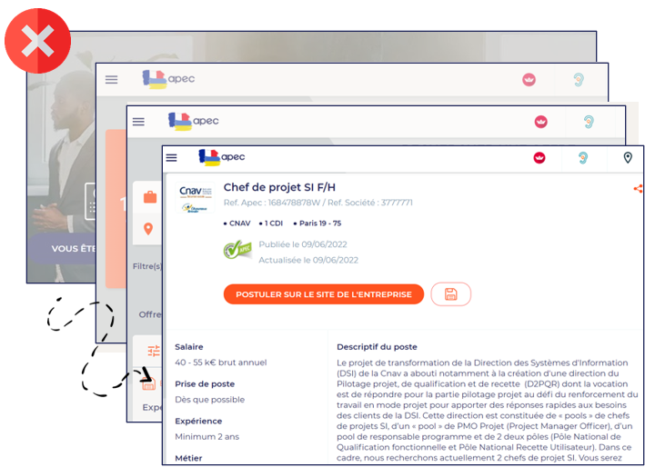

Bonnes Pratiques pour l'UX Design
L'UX Designer joue un rôle crucial en écoconception. Un parcours utilisateur simple et efficace est par nature moins consommateur de ressources, car il réduit le nombre d'actions, de pages vues et de temps passé à chercher l'information.
Axe 1 : Simplifier et optimiser les parcours
Le constat :
Des parcours complexes et longs forcent les utilisateurs à charger plus de pages et à effectuer plus d'actions, ce qui consomme inutilement des ressources serveur et client.
L'objectif :
Permettre à l'utilisateur d'atteindre son but le plus rapidement et avec le moins d'étapes possible.
Exemple : Le parcours de candidature
✔️ Parcours optimisé
La candidature simplifiée permet de postuler directement, sans quitter le site. Le parcours est court et fluide.

❌ Parcours complexe
Ici, l'utilisateur est redirigé vers le site de l'entreprise, ce qui ajoute des étapes et un temps de chargement supplémentaire.
Comment faire ?
- Identifier les parcours critiques : Utiliser les données analytiques pour cibler les 20% de parcours qui concentrent 80% du trafic et les optimiser en priorité.
- Réduire le nombre d'étapes : Analyser chaque étape d'un parcours en se demandant si elle est indispensable. Peut-on regrouper des actions ? Peut-on supprimer un clic ?
- Faciliter la recherche : Implémenter un moteur de recherche interne performant et pertinent pour permettre un accès direct à l'information.
- Anticiper les besoins : Proposer des contenus ou des actions contextuelles pour éviter à l'utilisateur de naviguer inutilement.
Axe 2 : Guider l'utilisateur pour éviter les erreurs
Le constat :
Les erreurs de saisie ou de navigation génèrent des allers-retours frustrants pour l'utilisateur et coûteux en ressources (nouvelles requêtes, rechargement de pages).
L'objectif :
Concevoir des interfaces qui préviennent les erreurs et guident l'utilisateur de manière claire.
Comment faire ?
- Validation en temps réel : Valider les champs de formulaire au fur et à mesure de la saisie pour donner un feedback immédiat, plutôt que d'attendre la soumission.
- Messages d'erreur clairs : Rédiger des messages qui expliquent clairement le problème et la manière de le résoudre.
- Tests utilisateurs : Organiser des tests pour identifier les points de friction, les incompréhensions et les "cas d'échec" dans les parcours.
- Utiliser l'autocomplétion : Proposer des suggestions pour les champs de recherche, les adresses, etc., pour accélérer la saisie et réduire les erreurs.
Sources
- Référentiel Général d'Écoconception de Services Numériques (RGESN)
- Checklist "Design éthique & durable"